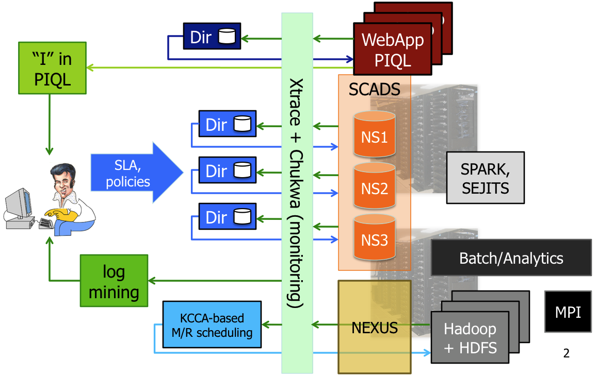

<lift:surround with="talk" at="content">
  <div class="slide titlepage">
    <h1>PIQL: A Performance Insightful Query Language</h1>
    <h2>Michael Armbrust, Stephen Tu</h2>
    <h2>Nick Lanham, Beth Trushkowsky</h2>
    <h3>RAD Lab Summer Retreat, May 2010</h3>
    <h3>Follow along at: <a href="http://piql.knowsql.org">http://piql.knowsql.org</a></h3>
    <div class="sponsors">
      
      
      
      <div class="associates">
        
        
        
        
        
        <br/>
        
        
        
        
        
        
      </div>
    </div>
  </div>
  <div class="slide content">
    <h1>RAD Lab Overview</h1>
    
  </div>
  <div class="slide content">
    <h1>Motivation</h1>
    
    <ul>
      <li>Developers find it difficult to write fast/scalable sites using a traditional RDBMS</li>
      <ul>
        <li>Ex: Many of Twitter's "Fail Whales" caused by unintentionally slow DB queries [Chirp 2010]</li>
        <li>Page load time now used as Goolgle Search ranking feature!</li>
      </ul>
      <li>NoSQL provides trivial <i>performance transparency</i></li>
      <ul>
        <li>Get/Put operations return in functionally constant time</li>
        <li>Simple Map/Reduce job runtime is O(N log N) with respect to data size</li>
      </ul>
      <li>At what cost?  Developers must:</li>
        <ul>
          <li>Write and hand-optimize queries as complex imperative code</li>
          <li>Manually select and maintain secondary indexes</li>
        </ul>
    </ul>
  </div>
  <div class="slide content">
    <h1>PIQL Enforces Scale Independence For All Queries</h1>
    <ul>
      <li>As a site's user base grows ensure no changes will be needed to application code or queries in order to keep the following constant:</li>
      <ul>
        <li>Cost per user</li>
        <li>Request latency</li>
        <li>Result staleness</li>
      </ul>
    </ul>
  </div>
  <div class="slide content">
    <h1>What's New</h1>
    <ul>
      <li>Real applications, implemented by undergrads</li>
      <li>Algorithm for <i>Fresh</i> PIQL optimization</li>
      <li>Interactive query scalability analyzer</li>
      <li>Interoperability</li>
      <ul>
        <li>All data stored using Apache Avro Serialization</li>
        <li>Async Avro based message passing layer</li>
      </ul>
    </ul>
  </div>
  <div class="slide content">
    <h1>Problems from Real Users</h1>
    <ul>
      <li>Auto-incrementing primary keys</li>
      <ul>
        <li>Disallowed by design</li>
        <li>Usually abandoned for scalability reasons eventually.  Ex: Twitter</li>
        <li>Add "Snowflake" ID generation support in next version?</li>
      </ul>
      <li>Need for full-text search</li>
      <ul>
        <li>Work around possible with self maintained index</li>
        <li>Possible feature for PIQL 2.0</li>
      </ul>
      <li>Other language and usability suggestions</li>
    </ul>
  </div>
  <div class="slide content">
    <h1>Fresh PIQL (aka PIQL 1.0)</h1>
    <ul>
      <li>Verifiably constant work queries</li>
      <li>Run on-demand</li>
      <li>Scale independence requirements:</li>
      <ul>
        <li><b>Fixed Response time:</b> must complete in less than 300ms</li>
        <li><b>Constant cost per user:</b> Must use a <i>bounded</i> number of <i>constant work</i> operators</li>
        <li><b>Bounded Staleness:</b> N/A</li>
      </ul>
    </ul>
  </div>
  <div class="slide content">
    <h1>Optimization Algorithm</h1>
    <ol>
      <li>Find a linear join ordering.</li>
      <li>Insert stop operators for <b>developer-specified cardinality constraints</b></li>
      <li>Push down predicates and stop operators [Carey 97]</li>
      <li>Starting from the bottom of the plan, select a <b>fixed number of performance safe operators</b></li>
      <li>If an appropriate operator can not be found, <b>reject the query</b></li>
    </ol>
  </div>
  <div class="slide content">
    <h1>PIQL Interactive Console</h1>
    <ul>
      <li>Browser based PIQL query editor</li>
      <li>Validates the scale independence of all queries</li>
      <li>Provides developers with visual assistance to fixing unscalable queries</li>
      <li><a href="/piql.html">Demo</a></li>
    </ul>
  </div>
  <div class="slide content">
    <h1>Other Queries</h1>
    <ul>
      <li>Many queries do not fit into the <i>Fresh PIQL</i> model:</li>
      <ul>
        <li>What are the trending topics?</li>
        <li>How many followers does Oprah have?</li>
        <li>What is the depth of the deepest re-tweet graph?</li>
      </ul>
    </ul>
  </div>
  <div class="slide content">
    <h1>Aged PIQL</h1>
    <ul>
      <li>Automatic pre-computation/caching of longer running queries</li>
      <li>Scale independence requirements:</li>
      <ul>
        <li><b>Fixed Interactive Response Time:</b> Cache query results and respond with <i>pre-calculated</i> answer</li>
        <li><b>Constant cost per user:</b> The running of the query must do no more than <i>O(N) work total</i></li>
        <li><b>Bounded staleness:</b> The query must <i>parallelize</i></li>
      </ul>
    </ul>
  </div>
  <div class="slide content">
    <h1>Handling Parameterized Queries</h1>
    <table class="code">
      <tr>
        <td>
          SELECT COUNT(*)<br/>
          FROM Subscriptions<br/>
          WHERE target = [1]
        </td>
        <td>=&gt;</td>
        <td>
          SELECT COUNT(*)<br/>
          FROM Subscriptions<br/>
          GROUP BY target
        </td>
      </tr>
    </table>
    <ul>
      <li>Performance safe data cubes</li>
      <li>Automatically converts parameterized queries into a lookup table for all possible parameter values</li>
    </ul>
  </div>
  <div class="slide content">
    <h1>Open Research Questions</h1>
    <ul>
      <li>What is the optimal update policy?</li>
      <ul>
        <li>Continuously running queries</li>
        <li>Update on demand</li>
        <li>Intelligent pre-execution</li>
        <li>Continually updated, streaming?</li>
      </ul>
      <li>Which long running queries are scale independent?</li>
    </ul>
  </div>
  <div class="slide content">
    <h1>Amp Lab Applications</h1>
    <ul>
      <li>Owners of big data want to provide access while protecting production system performance</li>
      <ul>
        <li>Ex: FBQL, AppEngine DataStore</li>
      </ul>
      <li>PIQL expands the kinds of queries that can be run over federated data with provable performance safety</li>
    </ul>
  </div>
  <div class="slide content">
    <h1>Summary</h1>
    <ul>
      <li>PIQL helps developers to meet SLOs by statically analyzing query plans for computational bounds independent of the data size or runtime parameters</li>
    </ul>
    <table id="summary">
      <tr>
        <td colspan="2"></td>
        <td colspan="3" class="heading">Query Bounds</td>
      </tr>
      <tr>
        <td colspan="2"></td>
        <td class="heading">Constant O(1)</td>
        <td class="heading">Linear O(N)</td>
        <td class="heading">Unbounded</td>
      </tr>
      <tr>
        <td rowspan="2" class="heading">User-Facing Queries</td>
        <td class="heading">On-Demand</td>
        <td class="allowed">Fresh PIQL</td>
        <td class="disallowed">Disallowed</td>
        <td class="disallowed" rowspan="2">Disallowed</td>
      </tr>
      <tr>
        <td class="heading">Precomputed</td>
        <td class="allowed" colspan="2">Aged PIQL</td>
      </tr>
      <tr>
        <td colspan="2" class="heading">Operator-Facing Queries</td>
        <td class="other" colspan="3">Hadoop, Pig, Spark, etc</td>
      </tr>
    </table>
    <ul>
      <li>Questions?</li>
    </ul>
  </div>
</lift:surround>
